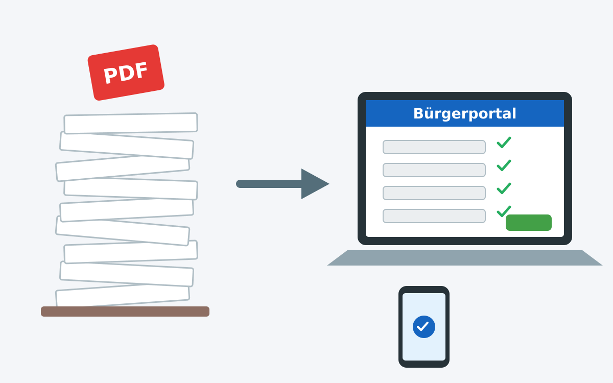

Der Bürokratieabbau in Deutschland ist seit Jahren ein häufig diskutiertes Thema, allerdings bleiben wir meist bei allgemeinen Aussagen stehen. In diesem Beitrag möchte ich konkrete Maßnahmen vorschlagen, die meiner Meinung nach helfen könnten, die Bürokratie in Deutschland zu reduzieren und die Effizienz zu steigern.
{kind=link}

Konkrete Beispiele
Um ineffiziente Bürokratie zu verdeutlichen, möchte ich konkrete Beispiele aus meinem eigenen Leben anführen.
Beantragung eines Besuchervisums
Meine indonesischen Schwiegereltern sollen dieses Jahr zu Besuch kommen. Dafür müssen wir Folgendes machen:
- Verpflichtungserklärung: Ich muss über Gehaltsnachweise belegen, dass ich für die Kosten ihres Aufenthalts aufkommen kann. Dazu muss ich...
- ein PDF-Formular ausfüllen, ausdrucken, unterschreiben, einscannen, per E-Mail verschicken und die Verwaltungsbeamtin tippt das dann wieder ein,
- einen Scan der Ausweisdokumente von mir, meiner Frau und ihren Eltern mitschicken,
- Gehaltsnachweise per E-Mail schicken,
- persönlich bei der Ausländerbehörde vorbeigehen, um die Verpflichtungserklärung zu unterschreiben.
- Krankenversicherung abschließen
- Dokumente bei der Deutschen Botschaft in Jakarta (bzw. deren Visadienstleister) einreichen:
...
Effizienter Datenaustausch
Ein großes Ärgernis in Deutschland sind Mängel im Datenaustausch. Konkret gibt es hier drei Kategorien:
- Zwischen Bürgern und Behörden:
- Bürgerportal: Es sollte ein zentrales Bürgerportal geben, über das Bürger mit allen Behörden kommunizieren und Dokumente austauschen können. Dieses Portal muss den Bürger authentifizieren und eine sichere Verbindung gewährleisten. Der Bürger sollte dort mit allen Ebenen der Verwaltung (kommunal, landesweit, bundesweit) interagieren können. Also eben nicht Elster + BayernPortal + diverse andere Portale, sondern ein Portal.
- Formulare: Jedes Formular, welches Bürger ausfüllen müssen, sollte es in digitaler Form geben - sowohl als ausfüllbares PDF als auch als Webformular. Das Web-Formular sollte grundlegende Datenvalidierung beinhalten, um Fehler zu minimieren.
- Zwischen Behörden und Firmen: Viele Informationen, welche Behörden und Ämter von mir als Bürger benötigen, kommen ursprünglich von Firmen. Beispiele sind Gehaltsnachweise von Arbeitgebern, Versicherungsnachweise, Mietverträge, usw. Diese Daten sollten direkt von den Firmen an die Behörden übermittelt werden müssen. Dafür sollten standardisierte Schnittstellen (APIs) geschaffen werden, die es Firmen ermöglichen, diese Daten sicher und effizient an die Behörden zu übermitteln.
Kernprinzipien für den Datenaustausch sollten sein:
- Komplett online: Der gesamte Prozess sollte online ablaufen, ohne dass physische Dokumente eingereicht/ausgedruckt/gescannt/abgetippt werden müssen oder der Bürger persönlich erscheinen muss.
- Einmalige Dateneingabe: Bürger sollten Daten nur einmal eingeben müssen. Danach sollten diese Daten für zukünftige Anträge gespeichert und wiederverwendet werden können. *